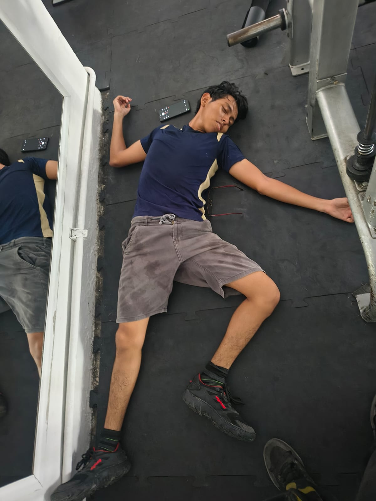
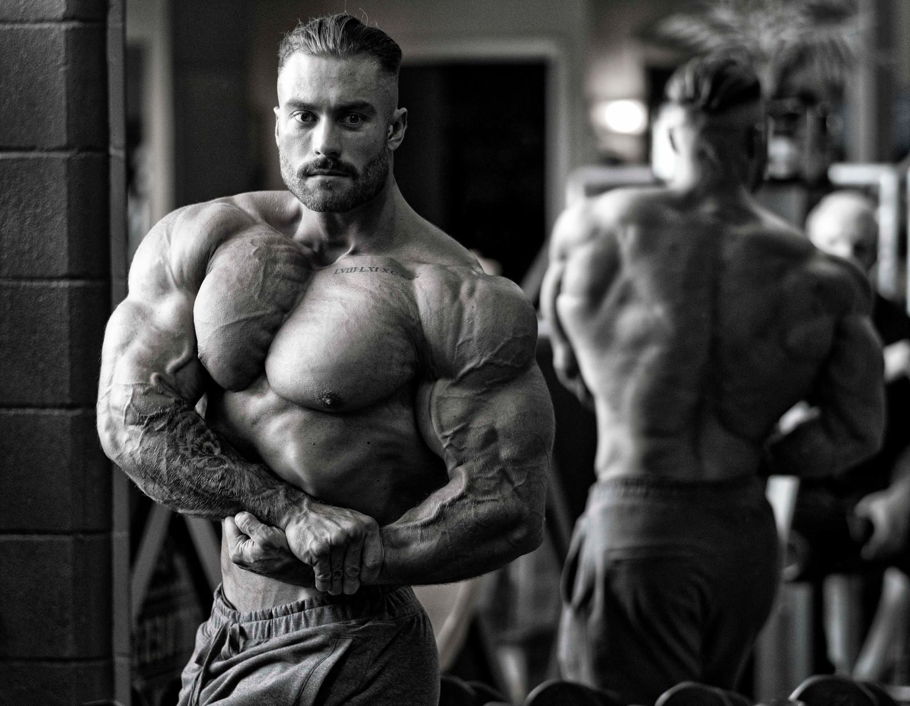

Define tu objetivo
Decide si quieres ganar músculo, mejorar tu fuerza, aumentar tu resistencia o simplemente tener una mejor salud. Es importante tener un objetivo, porque de eso dependerá el tipo de entrenamiento que quieras llevar
En esta página aprenderás lo básico sobre el gimnasio, desde rutinas y grupos musculares hasta los diferentes tipos de entrenamiento
EmpezarPESADO • DURO • AL FALLO
Todo lo que necesitas saber antes de comenzar
Decide si quieres ganar músculo, mejorar tu fuerza, aumentar tu resistencia o simplemente tener una mejor salud. Es importante tener un objetivo, porque de eso dependerá el tipo de entrenamiento que quieras llevar
Comienza entrenando de 3 a 4 días por semana de manera ligera. Cuando tu cuerpo se acostumbre, podrás ir aumentando el peso poco a poco. Es importante que seas constante, ya que la constancia es clave para progresar
Antes de entrenar al fallo, asegúrate de aprender correctamente la técnica de cada ejercicio, porque si no lo haces podrías lesionarte. Algunas lesiones pueden llegar a tener consecuencias a largo plazo
Anota los ejercicios, pesos y repeticiones que realizas para llevar un registro de tus avances. Además, si algún día se te olvida cuánto peso cargabas, solamente tendrás que revisar tus anotaciones
Selecciona un grupo muscular para conocer sus ejercicios recomendados y aprender cómo realizarlos
Existen diferentes formas de entrenar dependiendo de tus objetivos. Aquí te explicaré algunas de las más conocidas
Es un método de entrenamiento popularizado por Mike Mentzer. Se caracteriza por realizar pocas series de trabajo con una intensidad muy alta, normalmente llegando al fallo muscular. También le da mucha importancia al descanso y a la recuperación entre entrenamientos
Es un deporte de fuerza que se enfoca en tres movimientos principales: sentadilla, press de banca y peso muerto. Su objetivo es levantar la mayor cantidad de peso posible en estos ejercicios, siguiendo las reglas de competición
Este tipo de entrenamiento tiene como objetivo aumentar el tamaño de los músculos. Se utilizan ejercicios con pesas, máquinas o el propio peso corporal, buscando aumentar progresivamente el esfuerzo y el volumen de entrenamiento
Es una forma de entrenamiento que utiliza principalmente el peso corporal. Incluye ejercicios como dominadas, flexiones, fondos y sentadillas. Ayuda a desarrollar fuerza, coordinación y control del cuerpo
Elige cuántos días entrenarás y se te mostrará un plan de entrenamiento
Utilicé como referencia algunas rutinas de entrenamiento. Puedes ajustar los ejercicios según tus objetivos, experiencia y capacidad de recuperación
Estos son algunos consejos que me hubiera gustado que alguien me diera cuando empecé a entrenar
Mantén una alimentación equilibrada con suficientes proteínas, carbohidratos y grasas saludables. Recuerda que alimentarte correctamente es importante para conseguir tus objetivos
Procura dormir entre 7 y 9 horas por noche si eres adulto. Es importante descansar bien para recuperarte y poder dar el 110% en tus entrenamientos
Es importantísimo mantenerse hidratado. Si no tomas suficiente agua, podrías sufrir mareos, fatiga o incluso desmayarte durante el entrenamiento, especialmente si hace calor
Aumenta gradualmente las repeticiones, el peso o la dificultad de los ejercicios cuando puedas realizarlos con buena técnica. Esto te ayudará a seguir progresando
Nadie consigue resultados de un día para otro. Lo importante es ser constante y no rendirse. Aquí puedes ver cómo el esfuerzo y la disciplina pueden generar cambios con el tiempo

Antes de empezar no podia cargar ni una pesa de 10 lb

Después de meses de esfuerzo, constancia y dedicación, logró mejorar su físico
"Este año el pavo no va a ser lo único sabroso en navidad"